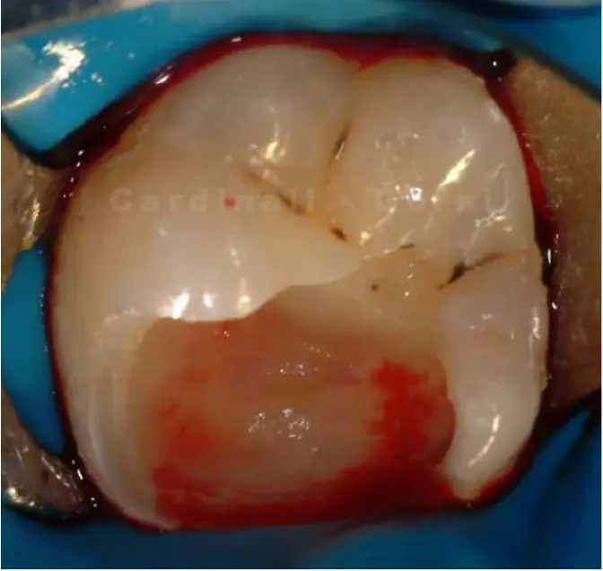

نسخه استخراجشده؛ ترجمه یا تأیید علمی انجام نشده است. وضعیت: captured
مولر اول پایین برای درمان ریشه آمده است. ترمیم آمالگام بزرگی دارد که لبهی دیستالش باز شده و زیرش پوسیدگی دیده میشود. همکلاسیات میخواهد همین حالا کلمپ بگذارد و اگر نگرفت، بدون رابردم کار کند. کار درست از کجا شروع میشود؟
دشواری ایزولاسیون را پیش از شروع درمان بسنج؛ نه وقتی کلمپ را برمیداری، نه پس از برداشتن پوسیدگی و نه پس از باز کردن حفرهی دسترسی. دندانی که درمان ریشه لازم دارد اغلب ترمیم بزرگ، پوسیدگی یا ساختار کمی دارد و همینها ایزولاسیون و دسترسی را سخت میکنند.
«رابردم نمیگذارم» جزو گزینهها نیست. هر چه دندان دشوارتر باشد، مزیت رابردم بیشتر به چشم میآید؛ و دندان دشوار که ایزوله شد، کار بعدی رویش ساده میشود.
برای ایزولاسیون درست، پوسیدگی، ترمیم معیوب و ترمیمی که لبهاش نشت دارد پیش از درمان برداشته میشوند. برخی برداشتن همهی ترمیمهای موجود را هم توصیه میکنند تا ترمیمپذیری دندان، علت بیماری و پیشآگهی بهتر سنجیده شود. تازه آن وقت معلوم است واقعاً چه مانده است.

اگر بالای کرست ساختار کافی نمانده، درمان جراحی (افزایش طول تاج) لازم میشود؛ و اگر ایزولاسیون مناسب به دست نیامد، بیمار را ارجاع بده.
نکتهی طلایی: لق ماندن کلمپ همیشه از کمبود ساختار نیست. در بیمار جوان، دندانی که کامل رویش نیافته گردنی برای گیر کلمپ ندارد. اینجا لیگاتور نخ دندان، Wedjets بیندندانی یا ایزولاسیون چنددندانی جواب میدهد.